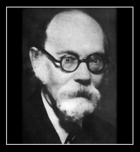

Ord. Prof. Dr. Ernst von Aster (1880 - 1948)

Ernst Von Aster 18 Şubat 1880 tarihinde Berlin'de doğdu. Babasının adı, Eduard. İlköğretimi Berlin'de okudu, Berlin Askanisches Gymnasium'da Nisan 1898 bakaloryasını vererek mezun oldu. Yüksek öğrenimini Münich ve Berlin Üniversitelerinde tamamladı. Doktorasını 15 Mayıs 1902'de verdi.
Prof. Von Aster'in bildiği yabancı diller şunlardır: Grekçe, Latince, Almanca, Fransızca, İngilizce, 3 yıl kaldığı İsveç'te İsveççe öğrenmiştir. Başlıca eserleri arasında Kant (1909), Prinzipien der Erkenntnislehre (1913), Geschichte der Antiken Philosophie (1920), Geschichte der neueren Erkenntnis Theorie (1921), Die Französische Revolution (1925), Geschichte der Englischen Philosophie (1927), Die Philosophie der Gegenwart (1935), Bilgi Teorisi ve Mantık (1945) sayılabilir.
9 Temmuz 1936 tarihinde Edebiyat Fakültesi Dekan Vekili İbrahim Hakkı tarafından Rektörlüğe yazılan dilekçede, Felsefe Bölümünde, özellikle de Felsefe Tarihi kürsüsünde profesör eksikliği duyulduğu belirtilmiştir. Felsefe Tarihi dersleri iki yıl boyunca Umumî Felsefe ve Mantık Ordinaryüsü Hans Reichenbach tarafından verilmekteydi, ancak 1936 yılında Reichenbach, kendisini bütünüyle Umumî Felsefe ve Mantık derslerine yöneltmek istediğini belirttiğinden Felsefe Tarihi kürsüsüne yurt dışından iki aday öğretim üyesi önerilmiştir. Bunlardan biri Cassirer, diğeri ise Von Aster'di. Ancak, Cassirer, Göteborg Üniversitesi ile 4 yıllığına anlaşma imzalayınca, doğrudan Von Aster'le bağlantı kurulur. Yazışmalar sonucunda Von Aster 1 Eylül 1936 tarihinde Rektörlüğe çektiği bir telgrafta, ilkece gelmek istediğini belirtir. 27 Eylül 1936 tarihinde ise kesin olarak geleceğini bildirir. 24 Ekim 1936'da Edebiyat Fakültesi Felsefe Tarihi Kürsüsü Ordinaryüslüğünde göreve başlayan Von Aster, 1937 yılında, Türk Tarih Kongresi'ne İbn Haldun üzerine bir konferansla katıldı. 1941 yılında, Hukuk Fakültesinde Hukuk Felsefesi dersleri verdi. Edebiyat Fakültesinde verdiği dersleri, Doçent M. Ş. İpşir çevirmiştir.
Prof. Reichenbach'ın Fakülte'den ayrılmasıyla her iki kürsünün de yönetimini üstlenen Von Aster 30 Aralık 1942 tarihinde Dekanlığa verdiği dilekçede, sistematik felsefenin en önemli disiplini olan Umumî Bilgi Teorisinin felsefe tarihi dersleri ile aynı elde toplanmasını doğru bulduğunu, sistematik sorunları incelemeden felsefe tarihi yapılmayacağı gibi, tarihlerini bilmeksizin sistematik sorunlarla ilgilenilmeyeceğim belirtir. Bu nedenle, söz konusu dersleri verebileceğini söyler, ama Felsefe Bölümünde duyulan öğretim üyesi eksikliğinin, Fakülte'nin diğer bölümleri için de verimli olacak bir profesörle doldurulması gerektiğini bildirir ve bu görev için Profesör Walter Kranz'ı önerir.
Uzun yıllar Edebiyat Fakültesi'nde görev yapan Von Aster'e, 1946 yılında rektörlük tarafından Türk uyruğuna geçebileceği bildirildi. 21 Ekim 1946'da yazdığı karşılıkta Von Aster, bu olanağı kendisi için büyük bir onur olarak görmekle birlikte yaşının ilerlemiş olması ve ülkesinde yoluna koyması gereken görevler olduğunu bildirerek Alman uyruğunda kaldı. 22 Ekim 1948 tarihinde izinli olarak gittiği İsveç'te vefat etti.
- Yorum göndermek için giriş yapın
- 8802 okuma
2013-2014 Ders Programı
G: I. Öğretim | II. Öğretim
Lisansüstü | Bilimsel Hazırlık
B: I. Öğretim | II. Öğretim
Lisansüstü | Bilimsel Hazırlık
2012-2013 Ders Programı
G: I. Öğretim | II. Öğretim
B: I. Öğretim | II. Öğretim
Lisansüstü | Bilimsel Hazırlık
2011-2012 Ders Programı
G: I. Öğretim | II. Öğretim
Lisansüstü | Bilimsel Hazırlık
B: I. Öğretim | II. Öğretim
Lisansüstü | Bilimsel Hazırlık
Danışmanlar: node/377